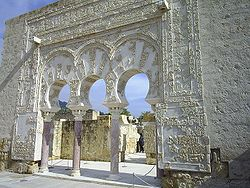
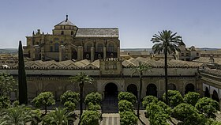
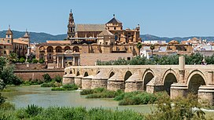
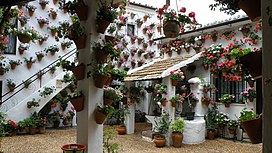

Córdoba Ciudad Patrimonio
Inicio
La Mezquita
Cascos Históricos
Los Patios
Medina Azahara
Contacto
Turismo
Descubre Córdoba
Explora los rincones más emblemáticos de Córdoba, ciudad declarada Patrimonio de la Humanidad.
Lugares Destacados
   
Ver Ruta en Google Earth
Explorar Ruta Turística en Google Earth